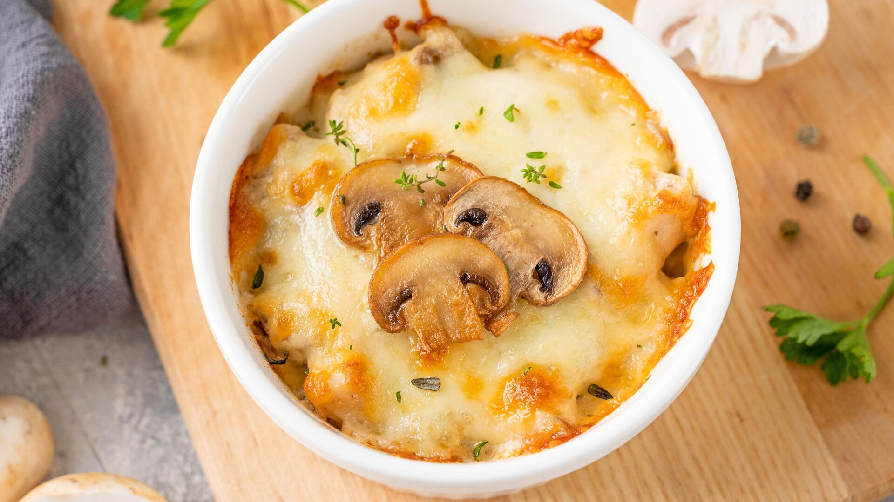

Очень популярную закуску - жульен (точнее, жюльен) с курицей и грибами, можно приготовить на сковороде примерно за полчаса, совершенно не напрягая себя приобретением кокотниц и доведением блюда до готовности в духовке. А получается так же вкусно!
